Bên trái là ảnh chụp ứng dụng đang chạy trên emulator (bản công, dữ liệu mẫu, 2026-11-12 đến 13), bên phải là mockup hướng B v2 (khung 390 x 844, dữ liệu minh họa). Hai bên cùng tỷ lệ. Ảnh gốc nằm ở docs/mobile-ux/audit/ và docs/mobile-ux/mockups/png/.
Trước: hai dòng ngữ cảnh lặp nhau, thẻ việc 10 dòng chữ cùng cỡ với nút dưới nếp gấp, không thấy số liệu giải ngân. Sau: một dải điều hành tối với một số lớn và một thanh, ba ô chỉ số, danh sách "Cần bạn quyết định" có hạn ba màu (biểu tượng và chữ).
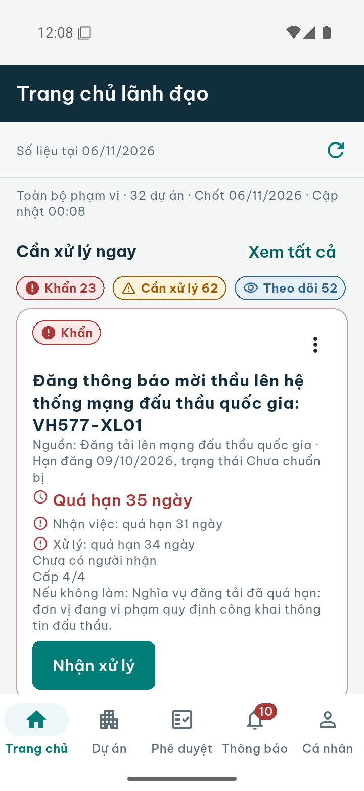
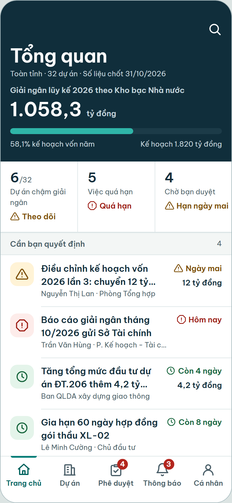
Trước: không có màn "việc hôm nay"; việc nằm trong thẻ xếp theo mức khẩn, trùng với tab Thông báo (ảnh bên trái là tab Thông báo). Sau: danh sách theo hạn với ba nhóm, ba dải màu có hình khác nhau, nút "Báo cáo" cho hiện trường.
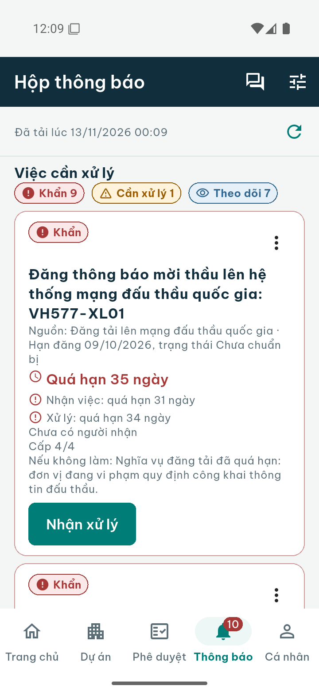
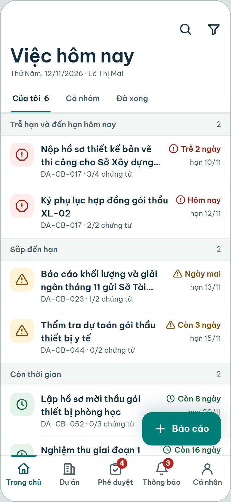
Trước: bảng "nhãn: giá trị" với "Chưa có", số tiền sai đơn vị ("38.000 triệu đồng"), không có tiến độ nhìn được. Sau: tiêu đề dự án, giai đoạn và tiến độ ngay đầu màn, bốn tab, danh sách việc theo hạn.
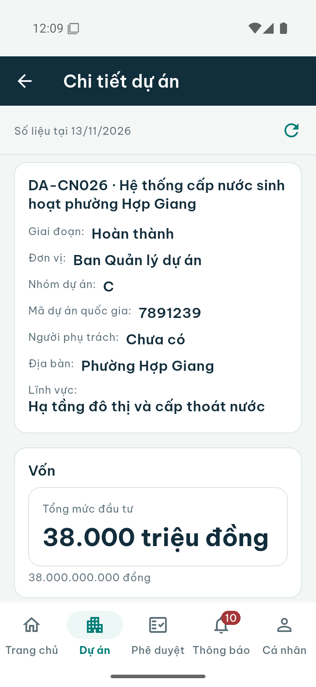
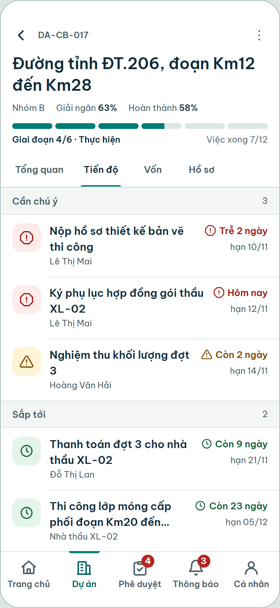
Trước: bốn hàng lối tắt và một nhóm thu gọn chứa mười hàng nữa nằm trên danh sách, dự án đầu tiên ở cuối màn. Sau: chỉ có dự án, mỗi hàng có tiến độ, giai đoạn và hạn ba màu; công cụ chuyển vào dự án và vào Cá nhân.
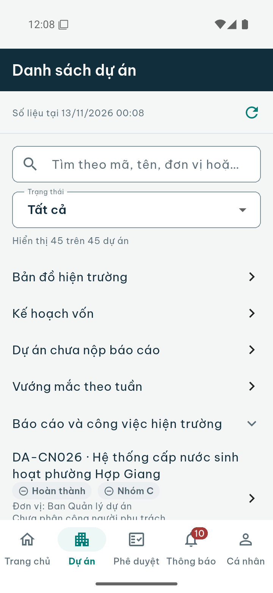
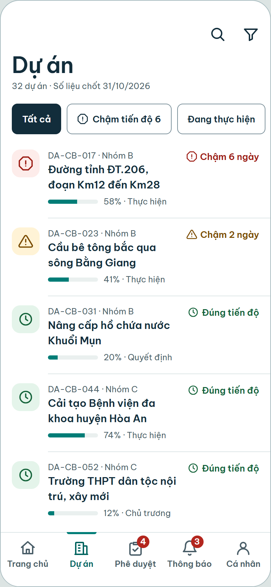
Trước: màn bị chặn chụp ảnh (cố ý, bảo mật), nên chỉ có bản mô tả từ cây điều khiển: bản doanh nghiệp hiện ba hàng giống hệt, bản công hiện "Chưa có dữ liệu. Điều chỉnh bộ lọc hoặc tạo bản ghi đầu tiên." Sau: hàng đủ dữ kiện để quyết (loại, tiêu đề, số tiền, người gửi, kết quả kiểm tra chứng từ, hạn) và xác nhận bằng bottom sheet có tóm tắt hậu quả.
audit/public/mob-23-approvals-uidump.txt và audit/enterprise/mob-23-approvals-uidump.txt. Ảnh đen: audit/enterprise/mob-23-approvals-BLACK-secure-screen.png.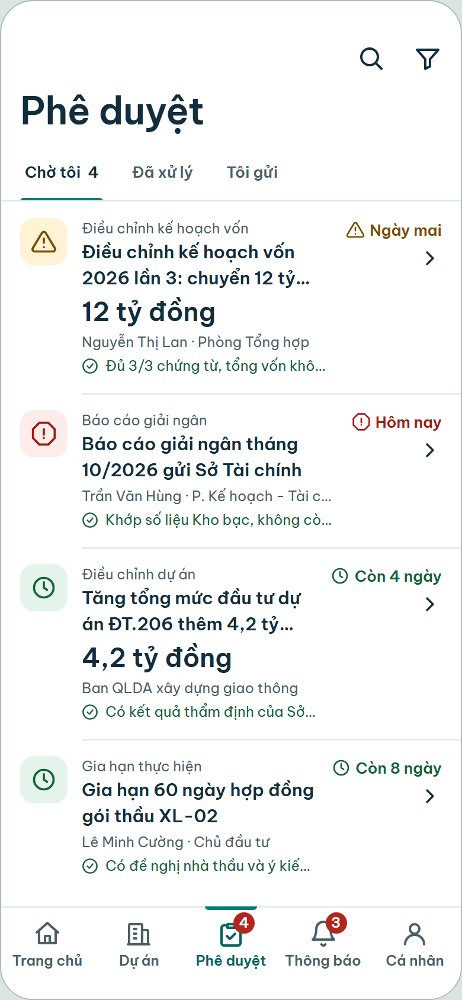
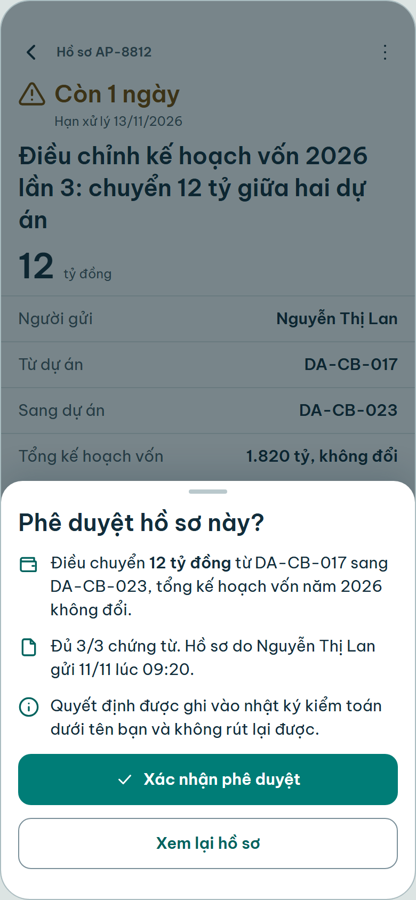
Chưa có màn tương ứng trong ứng dụng hiện tại (việc dự án thuộc module PWF sẽ xây sau). Mockup cho thấy chứng từ bắt buộc, khóa "Hoàn thành" khi còn thiếu chứng từ kèm lý do, và "Xin dời hạn".
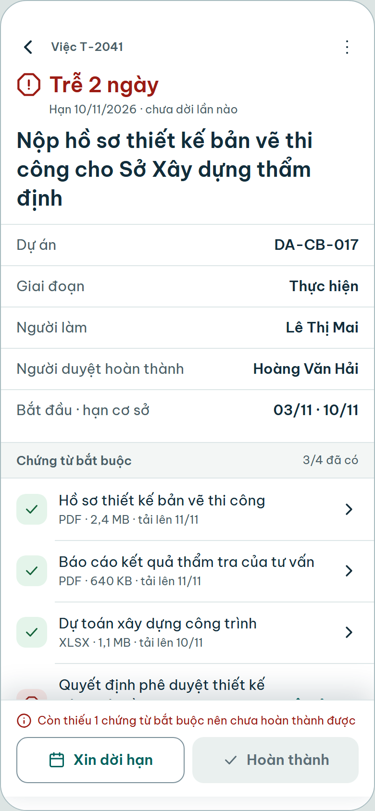
Trước: tab Thông báo là cùng danh sách việc với Trang chủ. Sau: dòng thời gian sự kiện nhóm Hôm nay, Hôm qua, có chấm chưa đọc và nhãn loại.
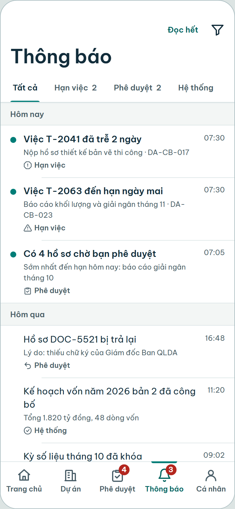
Trước: một câu chung cho mọi màn, màn "Ghi nhận vướng mắc" không có nút ghi nhận. Sau: câu theo ngữ cảnh và một hành động.
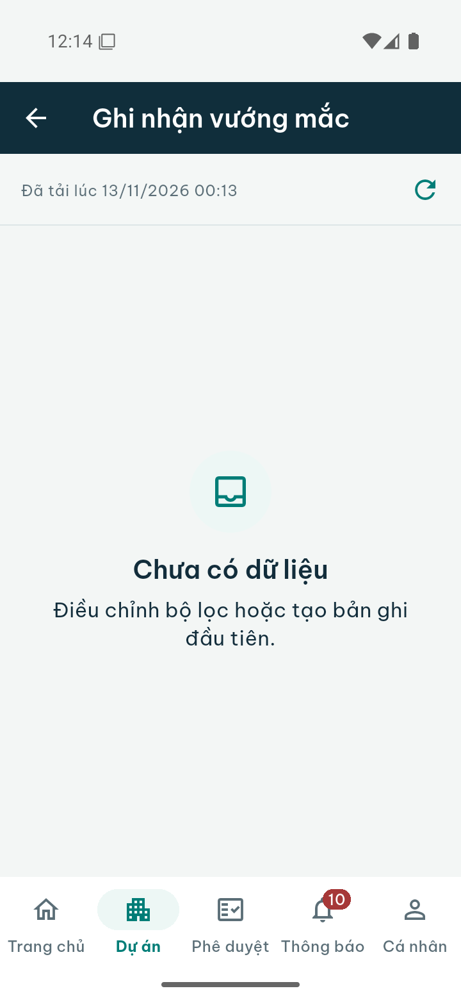
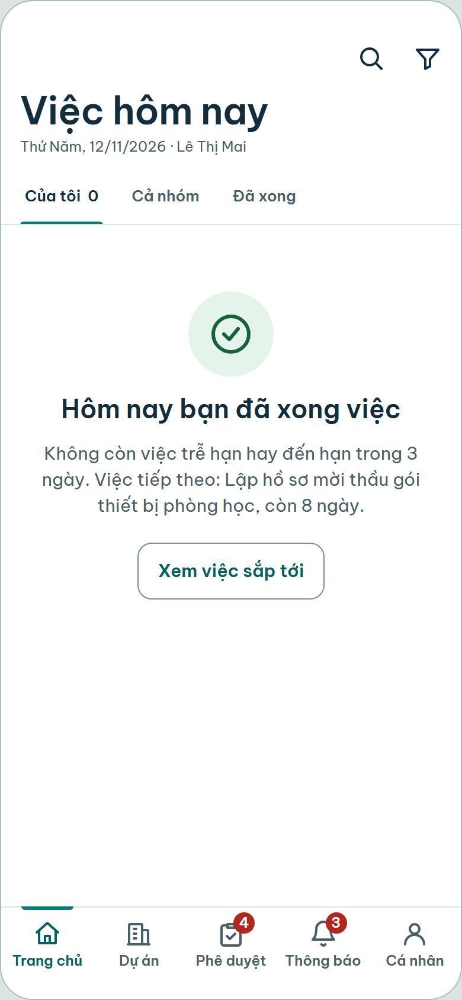
Trước (bản doanh nghiệp): hai dải báo cùng nói một điều chiếm 40% màn đầu. Sau: một dải, nói điều gì không làm được, có "Thử lại".
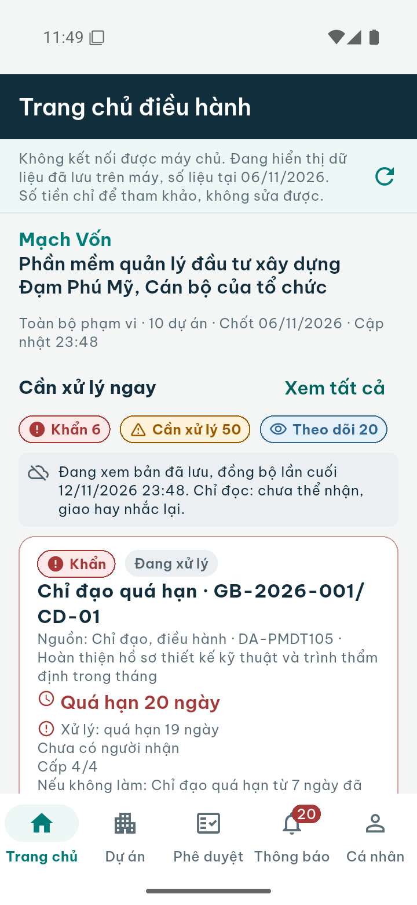
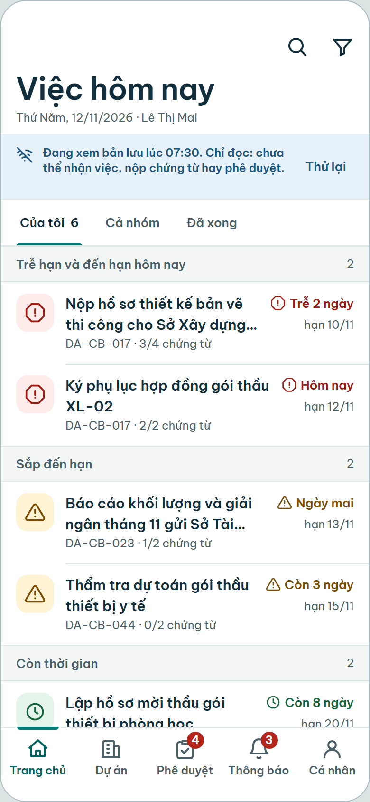
Trước (bản doanh nghiệp, kế hoạch vốn): "1.534.000 triệu đồng" và "26.788,606145 triệu đồng" gãy hai dòng. Sau: đơn vị chọn theo độ lớn ("1.534 tỷ đồng", "26,8 tỷ đồng"), số đầy đủ ở chi tiết. Xem quy tắc ở design-system-v2.md mục 6.
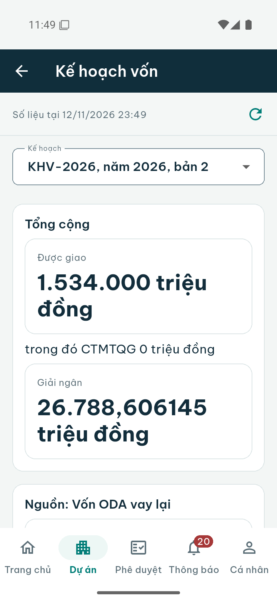
Những chế độ chưa có trong ứng dụng hiện tại, đã dựng để chứng minh hệ thống không vỡ.
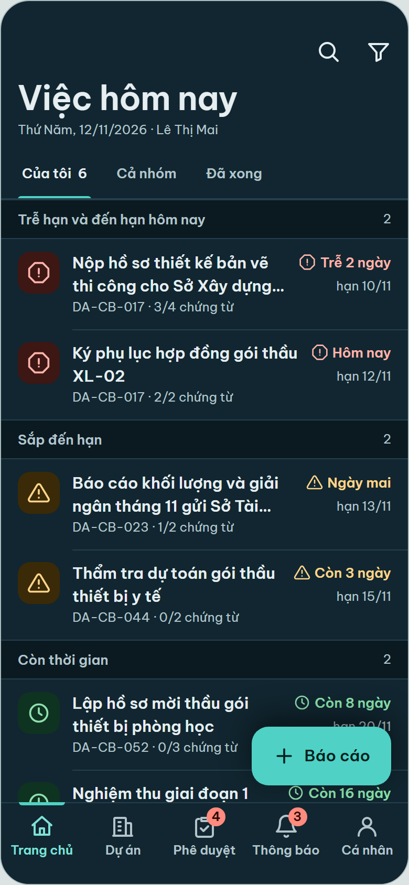
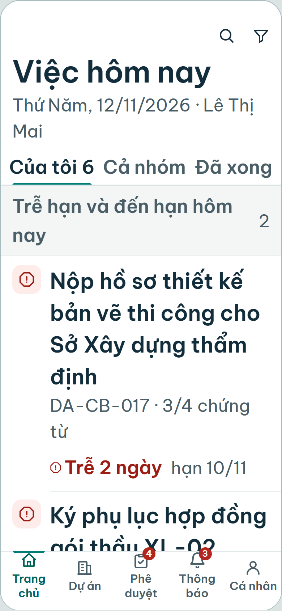
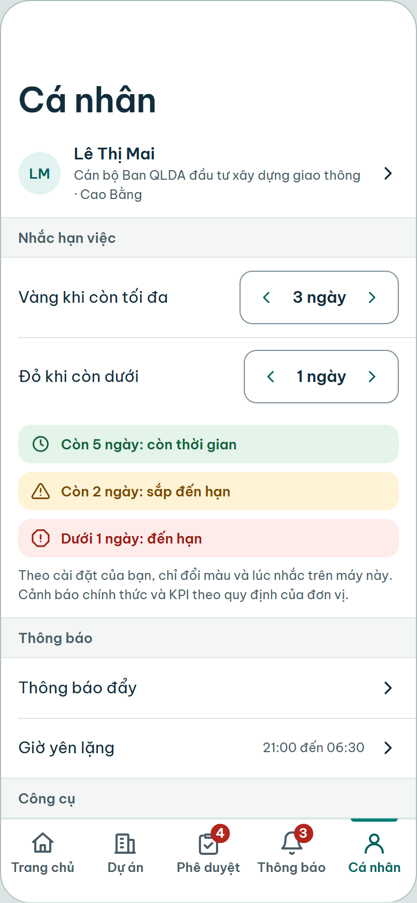
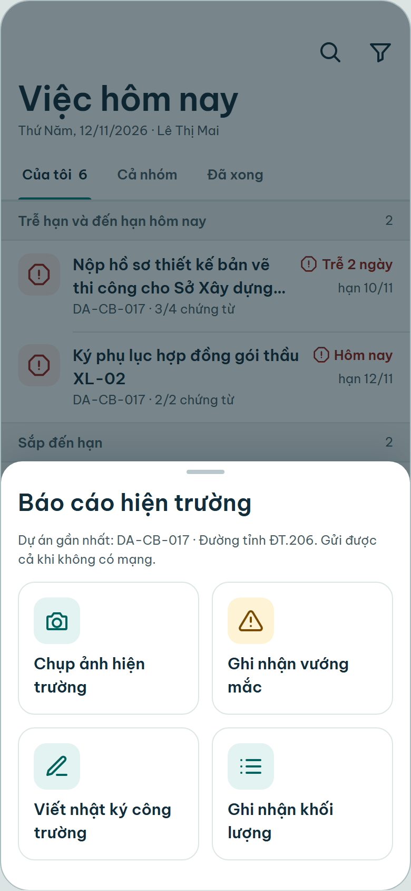
Mockup là đề xuất thiết kế, không phải ảnh phần mềm đã dựng. Tên, mã và số liệu là dữ liệu minh họa.